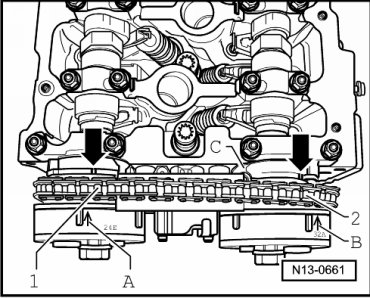
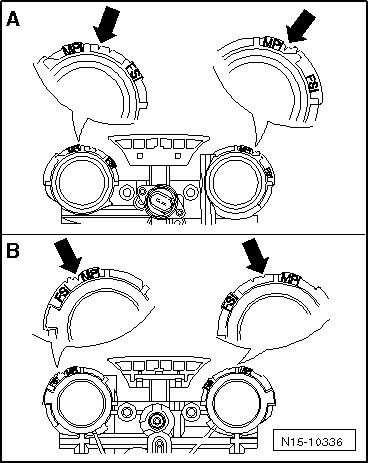

Timing Components: Testing and Inspection
Valve Timing, Checking
• Valve timing can be checked when the engine is installed.
Special tools, testers and auxiliary items required
• Camshaft bar (T10068 A)
Test Sequence
- Remove cylinder head cover and intake manifold --> [ Cylinder Head Cover ] Cylinder Head Cover.
- Remove front noise insulation.
- Rotate crankshaft at securing bolt of vibration damper in direction of engine rotation to TDC cyl. 1 marking - arrow -.

- Cams - A - of cylinder 1 must face each other.

- Insert the camshaft bar (T10068 A) into both shaft grooves.

• Due to the camshaft adjuster function, the camshaft grooves may not be perfectly horizontal. Therefore, turn the camshaft back and forth slightly with an open end wrench in order to insert the camshaft bar (T10068 A).

Verify the installation markings of the camshaft adjuster with the markings on the control housing:
- Marks - A - and - B - on camshaft adjusters must align with notches - arrows - on control housing - C -. Markings on control housing --> [ Markings on Control Housing with MPI Engines ]

- Distance between tooth - 1 - and tooth - 2 - of camshaft adjuster must be exactly 16 rollers of camshaft roller chain.
• Illustration shows a cover which has been removed.
• Depending on the production version, markings for FSI engines may be on the control housing. Only pay attention to the markings for MPI engines --> [ Markings on Control Housing with MPI Engines ]
If the markings do not match:
- Adjust valve timing --> [ Intermediate Driveshaft and Camshaft Drive Timing Chains, Installing ] Intermediate Driveshaft and Camshaft Drive Timing Chains, Installing.
If the markings match:
- Install cylinder head cover and intake manifold --> [ Cylinder Head Cover ] Cylinder Head Cover.
Markings on Control Housing with MPI Engines

Depending on the production version, markings for FSI engines may be on the control housing. Only pay attention to the markings for MPI engines.
- A - Flywheel-side view
- B - Vibration damper-side view
Notches - arrows - are reference points for markings on camshaft adjusters.